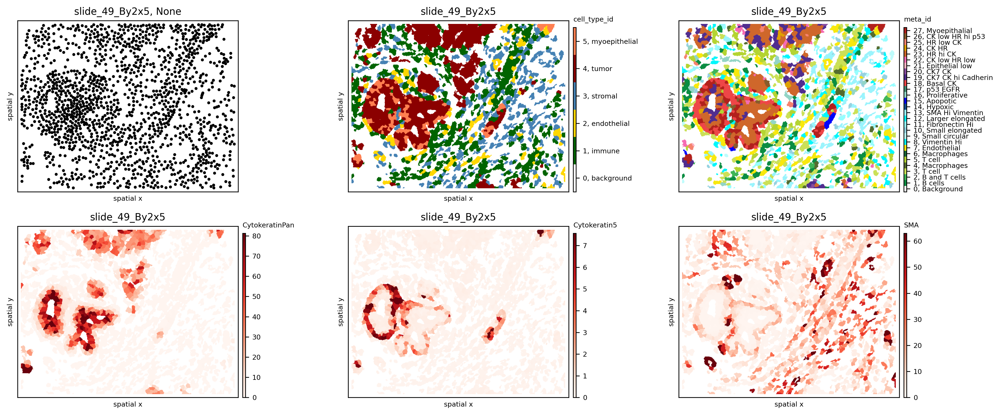
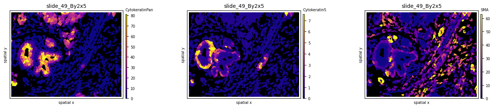
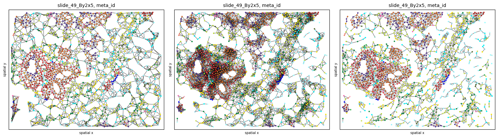
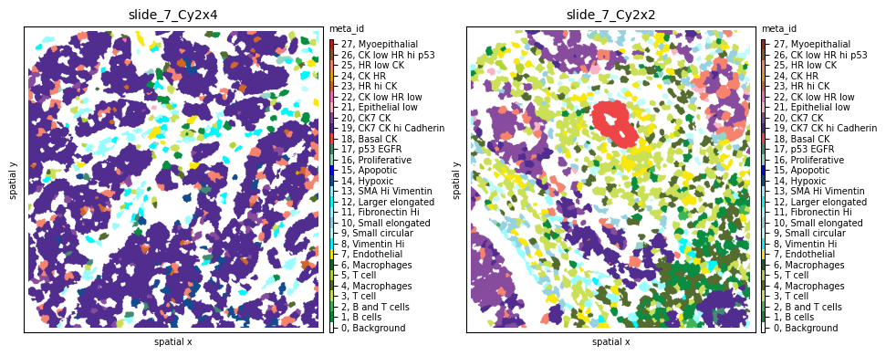
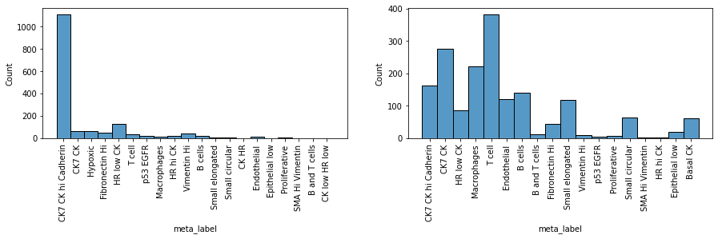

Tutorial on Imaging Mass Cytometry data¶
In this tutorial we will showcase how ATHENA can be used to explore Imaging Mass Cytometry datasets. We will use the publicly available dataset of (Jackson et al., 2020 - paper), where the authors used a panel of 35 cancer and immune markers to spatially profile the breast cancer ecosystem using Tissue Microarrays (TMAs) from two cohorts of breast cancer patients.
Import needed packages¶
import spatialHeterogeneity as sh
import numpy as np
import pandas as pd
from tqdm import tqdm
from matplotlib import cm
import matplotlib.pyplot as plt
from matplotlib.colors import ListedColormap, Normalize
import seaborn as sns
pd.set_option('display.max_columns', 5)
Load IMC data into a SpatialOmics object¶
Although the dataset consists of a total of 720 tumor images from 352 patients with breast cancer, for this tutorial, we will import 8 random TMA cores that can be easily loaded using the .dataset module of SpatialHeterogeneity:
so = sh.dataset.imc()
so
INFO:numexpr.utils:NumExpr defaulting to 8 threads.
SpatialOmics object with n_obs 20674
X: 8, (1369, 6069) x (34, 34)
spl: 8, ['pid', 'grade', 'location', 'tumor_size', 'gender', 'age', 'disease_status', 'ER_status', 'PR_status', 'filename_fullstack', 'height', 'width', 'area', 'subtype', 'clinical_type', 'cohort']
obs: 8, {'cell_type_id', 'meta_label', 'cell_type', 'meta_id'}
var: 8, {'metal_tag', 'fullstack_index', 'feature_type', 'target', 'channel', 'full_target_name'}
G: 8, {'contact'}
masks: 8, {'cellmasks', 'tumor_stroma'}
images: 8
Explore SpatialOmics object¶
Various preprocessing steps (segmentation, single-cell quantification, phenotyping) have been applied to the data by the original authors and are included in the various attributes of the data. For example, so.spl contains sample-level metadata:
print(so.spl.columns.values) #see all available sample annotations
so.spl.head(3)
['pid' 'grade' 'location' 'tumor_size' 'gender' 'age' 'disease_status'
'ER_status' 'PR_status' 'filename_fullstack' 'height' 'width' 'area'
'subtype' 'clinical_type' 'cohort']
| pid | grade | ... | clinical_type | cohort | |
|---|---|---|---|---|---|
| core | |||||
| SP43_116_X3Y4 | 116 | 3 | ... | TripleNeg | Basel |
| slide_49_By2x5 | 49 | 2 | ... | HR+HER2- | Z |
| slide_59_Cy7x7 | 59 | 3 | ... | TripleNeg | Z |
3 rows × 16 columns
… and so.obs contains all single-cell level metadata:
spl = 'slide_49_By2x5' #for one specific sample
print(so.obs[spl].columns.values) #see all available sample annotations
so.obs[spl].head(3)
['meta_id' 'meta_label' 'cell_type_id' 'cell_type']
| meta_id | meta_label | cell_type_id | cell_type | |
|---|---|---|---|---|
| cell_id | ||||
| 1 | 11 | Fibronectin Hi | 3 | stromal |
| 2 | 13 | SMA Hi Vimentin | 3 | stromal |
| 3 | 13 | SMA Hi Vimentin | 3 | stromal |
The so.mask attribute contains for each sample different segmentation masks. For this data set we have access to two different segmentations for each sample, the segmentation into single cells (cellmasks) and the segmentation into tumor-stroma regions (tumor_stroma).
print(so.masks[spl].keys())
dict_keys(['cellmasks', 'tumor_stroma'])
Visualize raw images and masks¶
Run the cell below to launch the interactive napari viewer and explore the multiplexed raw images. In addition to the single protein expression levels, we also add segmentations masks (with add_masks) for both the single-cell and the tumor-stroma borders.
sh.pl.napari_viewer(so, spl, attrs=so.var[spl]['target'], add_masks=so.masks[spl].keys())
INFO:OpenGL.acceleratesupport:No OpenGL_accelerate module loaded: No module named 'OpenGL_accelerate'
Visualize single-cell data¶
Set colormaps¶
First, let us set up a colormap and save it in the .uns attribute of the SpatialOmics instance, where it will be accessed by the .pl submodules when plotting certain features of the data. If no colormap is defined, the .pl module uses the default colormap (so.uns['colormap']['default']). The loaded dataset already comes with a phenotype classification for each single cell (meta_id in .obs) and a more coarse classification into main cell types (cell_type_id in .obs).
# define default colormap
so.uns['cmaps'].update({'default': cm.Reds})
# set up colormaps for meta_id
cmap_paper = np.array([[255, 255, 255], [10, 141, 66], [62, 181, 86], [203, 224, 87], # 0 1 2 3
[84, 108, 47], [180, 212, 50], [23, 101, 54], # 4 5 6
[248, 232, 13], [1, 247, 252], [190, 252, 252], # 7 8 9
[150, 210, 225], [151, 254, 255], [0, 255, 250], # 10 11 12
[154, 244, 253], [19, 76, 144], [0, 2, 251], # 13 14 15
[147, 213, 198], [67, 140, 114], [238, 70, 71], # 16 17 18
[80, 45, 143], [135, 76, 158], [250, 179, 195], # 19 20 21
[246, 108, 179], [207, 103, 43], [224, 162, 2], # 22 23 24
[246, 131, 110], [135, 92, 43], [178, 33, 28]])
# define labels for meta_id
cmap_labels = {0: 'Background',
1: 'B cells',
2: 'B and T cells',
3: 'T cell',
4: 'Macrophages',
5: 'T cell',
6: 'Macrophages',
7: 'Endothelial',
8: 'Vimentin Hi',
9: 'Small circular',
10: 'Small elongated',
11: 'Fibronectin Hi',
12: 'Larger elongated',
13: 'SMA Hi Vimentin',
14: 'Hypoxic',
15: 'Apopotic',
16: 'Proliferative',
17: 'p53 EGFR',
18: 'Basal CK',
19: 'CK7 CK hi Cadherin',
20: 'CK7 CK',
21: 'Epithelial low',
22: 'CK low HR low',
23: 'HR hi CK',
24: 'CK HR',
25: 'HR low CK',
27: 'Myoepithalial',
26: 'CK low HR hi p53'}
so.uns['cmaps'].update({'meta_id': ListedColormap(cmap_paper / 255)})
so.uns['cmap_labels'].update({'meta_id': cmap_labels})
# cell_type_id colormap
cmap = ['white', 'darkgreen', 'gold', 'steelblue', 'darkred', 'coral']
cmap_labels = {0: 'background', 1: 'immune', 2: 'endothelial', 3: 'stromal', 4: 'tumor', 5: 'myoepithelial'}
cmap = ListedColormap(cmap)
so.uns['cmaps'].update({'cell_type_id': cmap})
so.uns['cmap_labels'].update({'cell_type_id': cmap_labels})
Plot protein intensity or single-cell annotations¶
Samples stored in the SpatialOmics object can be visualised with the plotting function pl.spatial.
In a first step we extract the centroids of each cell segmentation masks with pp.extract_centroids and store the results in the SpatialOmics instance (so.obs[spl]). This is required to enable the full plotting functionalities.
print(so.masks[spl].keys())
# extract cell centroids across all samples
for spl in so.obs.keys():
sh.pp.extract_centroids(so, spl, mask_key='cellmasks')
# print results
print(so.obs[spl])
dict_keys(['cellmasks', 'tumor_stroma'])
meta_id meta_label ... y x
cell_id ...
1 19 CK7 CK hi Cadherin ... 11.344660 72.325243
2 20 CK7 CK ... 2.346154 85.961538
3 19 CK7 CK hi Cadherin ... 1.142857 209.809524
4 19 CK7 CK hi Cadherin ... 3.769912 219.769912
5 14 Hypoxic ... 1.375000 260.166667
... ... ... ... ... ...
1611 7 Endothelial ... 518.425000 192.075000
1612 19 CK7 CK hi Cadherin ... 518.477612 233.283582
1613 19 CK7 CK hi Cadherin ... 520.000000 413.956522
1614 19 CK7 CK hi Cadherin ... 519.962963 421.962963
1615 11 Fibronectin Hi ... 514.229167 507.343750
[1611 rows x 6 columns]
If only the SpatialOmics instance and the sample id is provided, the sample is plotted as a scatter plot using the computed centroids. However, with mode=mask, the computed segmentation masks are used. The observations can be colored according to a specific feature from so.obs[spl] or so.X[spl] - see example below:
spl = 'slide_49_By2x5'
fig, axs = plt.subplots(2, 3, figsize=(15, 6), dpi=300)
sh.pl.spatial(so, spl, None, ax=axs.flat[0])
sh.pl.spatial(so, spl, 'cell_type_id', mode='mask', ax=axs.flat[1])
sh.pl.spatial(so, spl, 'meta_id', mode='mask', ax=axs.flat[2])
sh.pl.spatial(so, spl, 'CytokeratinPan', mode='mask', ax=axs.flat[3])
sh.pl.spatial(so, spl, 'Cytokeratin5', mode='mask', ax=axs.flat[4])
sh.pl.spatial(so, spl, 'SMA', mode='mask', ax=axs.flat[5])

Experiment with different colormaps or background colors:
so.uns['cmaps'].update({'default': cm.plasma})
fig, axs = plt.subplots(1, 3, figsize=(15, 3), dpi=100)
sh.pl.spatial(so, spl, 'CytokeratinPan', mode='mask', ax=axs.flat[0], background_color='black')
sh.pl.spatial(so, spl, 'Cytokeratin5', mode='mask', ax=axs.flat[1], background_color='black')
sh.pl.spatial(so, spl, 'SMA', mode='mask', ax=axs.flat[2], background_color='black')

Graph construction¶
Use the .graph submodule to construct 3 different graphs and experiment with the parameters (k, radius):
# import default graph builder parameters
from spatialHeterogeneity.graph_builder.constants import GRAPH_BUILDER_DEFAULT_PARAMS
# kNN graph
config = GRAPH_BUILDER_DEFAULT_PARAMS['knn']
config['builder_params']['n_neighbors'] = 6 # set parameter k
sh.graph.build_graph(so, spl, builder_type='knn', mask_key='cellmasks', config=config)
# radius graph
config = GRAPH_BUILDER_DEFAULT_PARAMS['radius']
config['builder_params']['radius'] = 20 # set radius
sh.graph.build_graph(so, spl, builder_type='radius', mask_key='cellmasks', config=config)
# contact graph - this takes some time
sh.graph.build_graph(so, spl, builder_type='contact', mask_key='cellmasks')
# the results are saved back into `.G`:
so.G[spl]
/usr/local/Caskroom/miniconda/base/envs/athena/lib/python3.8/site-packages/sklearn/base.py:450: UserWarning: X does not have valid feature names, but NearestNeighbors was fitted with feature names
warnings.warn(
/usr/local/Caskroom/miniconda/base/envs/athena/lib/python3.8/site-packages/sklearn/base.py:450: UserWarning: X does not have valid feature names, but NearestNeighbors was fitted with feature names
warnings.warn(
100%|███████████████████████████████████████████████████████████████████████████| 1541/1541 [00:16<00:00, 92.62it/s]
{'contact': <networkx.classes.graph.Graph at 0x7fc4c269e0d0>,
'knn': <networkx.classes.graph.Graph at 0x7fc4954375e0>,
'radius': <networkx.classes.graph.Graph at 0x7fc495605070>}
The results can be plotted again using the .pl.spatial submodule. Notice how different graph builders result in graphs with different properties:
fig, axs = plt.subplots(1, 3, figsize=(15, 6), dpi=100)
sh.pl.spatial(so, spl, 'meta_id', edges=True, graph_key='knn', ax=axs.flat[0], cbar=False)
sh.pl.spatial(so, spl, 'meta_id', edges=True, graph_key='radius', ax=axs.flat[1], cbar=False)
sh.pl.spatial(so, spl, 'meta_id', edges=True, graph_key='contact', ax=axs.flat[2], cbar=False)

Heterogeneity quantification¶
Sample-level scores¶
Sample-level scores estimate a single heterogeneity score for the whole tumor, saved in so.spl. Although they ignore the spatial topology and cell-cell interactions, they describe the heterogeneity attrbuted to the number of cell types present and their frequencies. Below we show how to compute some of the included metrics across all 8 samples:
# compute cell counts
so.spl['cell_count'] = [len(so.obs[s]) for s in so.obs.keys()]
so.spl['immune_cell_count'] = [np.sum(so.obs[s].cell_type == 'immune') for s in so.obs.keys()]
# compute metrics at a sample level
all_samples = so.spl.index.values
for s in all_samples:
sh.metrics.richness(so, s, 'meta_id', local=False)
sh.metrics.shannon(so, s, 'meta_id', local=False)
# estimated values are saved in so.spl
so.spl[['cell_count', 'richness_meta_id', 'shannon_meta_id']]
| cell_count | richness_meta_id | shannon_meta_id | |
|---|---|---|---|
| core | |||
| SP43_116_X3Y4 | 6069 | 25.0 | 3.176066 |
| slide_49_By2x5 | 1541 | 24.0 | 3.952585 |
| slide_59_Cy7x7 | 2792 | 15.0 | 2.794546 |
| slide_59_Cy7x8 | 2856 | 14.0 | 2.222783 |
| slide_59_Cy8x1 | 2701 | 15.0 | 2.796984 |
| slide_7_Cy2x2 | 1735 | 19.0 | 3.410451 |
| slide_7_Cy2x3 | 1369 | 18.0 | 3.202213 |
| slide_7_Cy2x4 | 1611 | 21.0 | 1.951253 |
To evaluate results, let’s look at two samples (slide_7_Cy2x2 and slide_7_Cy2x4) from the same patient (pid=7). Although they have similar cell counts and richness, their Shannon entropy values are markedly different, indicating higher heterogeneity for sample slide_7_Cy2x2:
fig, axs = plt.subplots(1, 2, figsize=(10, 4), dpi=100)
sh.pl.spatial(so, 'slide_7_Cy2x4', 'meta_id', mode='mask', ax=axs.flat[0])
sh.pl.spatial(so, 'slide_7_Cy2x2', 'meta_id', mode='mask', ax=axs.flat[1])

Indeed, we clearly see that while the first sample is dominated by one cell subpopulation (CK7 CK hi Cadherin), in the second sample the meta_id distribution is more spread, resulting in a higher Shannon index.
fig = plt.figure(figsize=(15, 3))
plt.subplot(1, 2, 1)
sns.histplot(so.obs['slide_7_Cy2x4']['meta_label'])
plt.xticks(rotation=90)
plt.subplot(1, 2, 2)
sns.histplot(so.obs['slide_7_Cy2x2']['meta_label'])
plt.xticks(rotation=90)
plt.show()

Cell-level scores¶
Cell-level scores quantify heterogeneity in a spatial manner, accounting for local effects, and return a value per single cell, saved in so.obs. To apply these scores to the data we use again .metrics but this time with local=True. Since these scores heavily depend on the tumor topology, the graph type and occasionally additional parameters also need to be provided.
# compute metrics at a cell level for all samples - this will take some time
for s in tqdm(all_samples):
sh.metrics.richness(so, s, 'meta_id', local=True, graph_key='contact')
sh.metrics.shannon(so, s, 'meta_id', local=True, graph_key='contact')
sh.metrics.quadratic_entropy(so, s, 'meta_id', local=True, graph_key='contact', metric='cosine')
# estimated values are saved in so.obs
so.obs[spl].columns
0%| | 0/8 [00:00<?, ?it/s]
The results can be plotted again using the .pl.spatial submodule and passing the attribute we want to visualize. For example, let’s observe the spatial heterogeneity of a random sample using three different metrics in the cell below. While local richness highlights tumor neighborhoods with multiple cell phenotypes present, local Shannon also takes into consideration the proportions of these phenotypes. Finally, local quadratic entropy additionally takes into consideration the similarity between these phenotypes using the single-cell proteomic data stored in .X. Notice how, in the last subplot, only regions where cell phenotypes with very different profiles (e.g., tumor - immune - stromal) are highlighted.
so.uns['cmaps'].update({'default': cm.plasma})
# visualize cell-level scores
spl='slide_49_By2x5'
fig, axs = plt.subplots(1, 4, figsize=(25, 12), dpi=300)
axs = axs.flat
sh.pl.spatial(so, spl, 'meta_id', mode='mask', ax=axs[0])
sh.pl.spatial(so, spl, 'richness_meta_id_contact', mode='mask', ax=axs[1], cbar_title=False, background_color='black')
sh.pl.spatial(so, spl, 'shannon_meta_id_contact', mode='mask', ax=axs[2], cbar_title=False, background_color='black')
sh.pl.spatial(so, spl, 'quadratic_meta_id_contact', mode='mask', ax=axs[3], cbar_title=False, background_color='black')
We can also observe how different graph topologies strongly influence the results:
so.uns['cmaps'].update({'default': cm.plasma})
# try out different graph topologies
sh.metrics.quadratic_entropy(so, spl, 'meta_id', local=True, graph_key='radius')
sh.metrics.quadratic_entropy(so, spl, 'meta_id', local=True, graph_key='knn')
# visualize results
fig, axs = plt.subplots(1, 4, figsize=(25, 12), dpi=300)
axs = axs.flat
sh.pl.spatial(so, spl, 'meta_id', mode='mask', ax=axs[0])
sh.pl.spatial(so, spl, 'quadratic_meta_id_contact', mode='mask', ax=axs[1], cbar_title=False, background_color='black')
sh.pl.spatial(so, spl, 'quadratic_meta_id_radius', mode='mask', ax=axs[2], cbar_title=False, background_color='black')
sh.pl.spatial(so, spl, 'quadratic_meta_id_knn', mode='mask', ax=axs[3], cbar_title=False, background_color='black')
Since these scores are computed at the single-cell level, each tumor can now be represented by a histogram of values, as seen below for local quadratic entropy:
fig = plt.figure(figsize=(25, 12))
for i,s in enumerate(all_samples):
plt.subplot(2, 4, i+1)
g=sns.histplot(so.obs[s]['quadratic_meta_id_contact'], stat='probability')
g.set_title(s + ', median quad entropy = ' + str(round(so.obs[s]['quadratic_meta_id_contact'].median(),3)))
plt.ylim([0,0.32])
plt.xlim([0,1])
Let’s plot two of the samples with the smallest and highest median quadratic entropy to evaluate the results. We clearly see that slide_7_Cy2x4 is mostly homogeneous, with few highly entropic regions, and slide_59_Cy7x7 is highly heterogeneous, as most areas contain mixtures of immune, stromal, endothelial and cancer cells.
fig, axs = plt.subplots(1, 4, figsize=(20, 8), dpi=100)
sh.pl.spatial(so, 'slide_7_Cy2x4', 'meta_id', mode='mask', ax=axs.flat[0])
sh.pl.spatial(so, 'slide_7_Cy2x4', 'quadratic_meta_id_contact', mode='mask', ax=axs.flat[1],
cbar=False, background_color='black')
sh.pl.spatial(so, 'slide_59_Cy7x7', 'meta_id', mode='mask', ax=axs.flat[2])
sh.pl.spatial(so, 'slide_59_Cy7x7', 'quadratic_meta_id_contact', mode='mask', ax=axs.flat[3],
cbar=False, background_color='black')
# if needed, we can retrieve selected single-cell score values
so.obs[spl].loc[:,['richness_meta_id_contact',
'shannon_meta_id_contact',
'quadratic_meta_id_contact']].head(5)
Immune infiltration¶
The infiltration score included in the .neigh submodule quantifies the degree of tumor-immune mixing (as defined in Keren, L. et al. - paper). Let us compute it across all patients:
for s in tqdm(all_samples):
sh.neigh.infiltration(so, s, 'cell_type', graph_key='contact')
so.spl.loc[all_samples].infiltration
Now let’s sort all samples by increasing immune infiltration:
# sort samples by increasing infiltration
ind1=np.argsort(so.spl.loc[all_samples].infiltration.values)
# update colormap to show only immune and tumor cells
cmap = ['white', 'darkgreen', 'lightgrey', 'lightgrey', 'darkred', 'lightgrey']
cmap_labels = {0: 'background', 1: 'immune', 2: 'endothelial', 3: 'stromal', 4: 'tumor', 5: 'myoepithelial'}
cmap = ListedColormap(cmap)
so.uns['cmaps'].update({'cell_type_id': cmap})
so.uns['cmap_labels'].update({'cell_type_id': cmap_labels})
fig, axs = plt.subplots(2, 4, figsize=(14, 7), dpi=300)
for i,s in enumerate(ind1):
sh.pl.spatial(so, all_samples[s], 'cell_type_id', mode='mask', ax=axs.flat[i])
d = so.spl.loc[all_samples[s]]
axs.flat[i].set_title(f'Patient {d.pid}, infiltration: {d.infiltration:.2f}', fontdict={'size': 10})
We observe that, as expected, as infiltration increases, immune cells penetrate more into the tumor area. One notable exception is the sample from Patient 7 with the highest infiltration score (0.55). Notice how, in this sample, the number of immune cells is much lower than that of tumor cells, resulting in multiple immune-tumor interactions by chance alone. Since the infiltration score is computed as the ratio of the number of tumor-immune interactions to immune-immune interactions, this high imbalance artificially inflates the infiltration score.
In a next step we compute the infiltration on a cell-level. Since this method extracts the neighborhood subgraph of each cell it is recommended to use the radius graph representation with a reasonable radius.
config = GRAPH_BUILDER_DEFAULT_PARAMS['radius']
config['builder_params']['radius'] = 36
sh.graph.build_graph(so, spl, builder_type='radius', config=config)
attr = 'cell_type'
sh.neigh.infiltration(so, spl, attr, graph_key='radius', local=True)
fig, axs = plt.subplots(1,3, figsize=(16,8))
sh.pl.spatial(so, spl, 'cell_type_id', ax=axs[0])
sh.pl.infiltration(so, spl, step_size= 10, ax=axs[1])
sh.pl.infiltration(so, spl, step_size= 5, ax=axs[2])
Cell type interactions¶
We will then quantify tumor heterogeneity by looking into interactions between cell (pheno)types. First, let’s compute the interaction strength using both the meta_ids and the cell_type_ids across all 8 samples using the .neigh.interactions submodule:
import logging
logging.getLogger().setLevel(logging.ERROR) # set logger to logging.INFO if you want to see more progress information
# this will take some time...
for s in tqdm(all_samples):
sh.neigh.interactions(so, s, 'meta_id', mode='proportion', prediction_type='diff', graph_key='contact');
sh.neigh.interactions(so, s, 'cell_type_id', mode='proportion', prediction_type='diff', graph_key='contact');
Let’s look at the results for sample slide_7_Cy2x4 below. We notice multiple interactions between the few immune, stromal and endothelial cells (red squares in the first 13 rows and columns). At the same time, most of these cell phenotypes strongly avoid the dominant tumor cell population 19, indicated by the blue squares in its respective column. Tumor phenotype 19 seems to be attracted only by phenotypes 20, 23 and 24.
norm = Normalize(-.3, .3)
fig, axs = plt.subplots(1, 2, figsize=(15, 6), dpi=100)
sh.pl.spatial(so, 'slide_7_Cy2x4', 'meta_id', mode='mask', ax=axs[0])
sh.pl.interactions(so, 'slide_7_Cy2x4', 'meta_id', mode='proportion', prediction_type='diff', graph_key='contact', ax=axs[1],
norm=norm)
Observing sample slide_7_Cy2x2 from the same patient 7 shows again the same immune, endothelial and stromal co-occurence, but this time we notice strongly self-clustered tumor phenotypes (18) as well as strongly interacting phenotypes 20, 21 and 25.
fig, axs = plt.subplots(1, 2, figsize=(15, 6), dpi=100)
sh.pl.spatial(so, 'slide_7_Cy2x2', 'meta_id', mode='mask', ax=axs[0])
sh.pl.interactions(so, 'slide_7_Cy2x2', 'meta_id', mode='proportion', prediction_type='diff', graph_key='contact', ax=axs[1],
norm=norm)
fig.tight_layout()
# fig.show()
Last, these interaction matrices can also be visualized per cell_type_ids, as shown below, where we clearly see again how all immune, stromal and endothelial cells of sample slide_7_Cy2x4 strongly avoid all tumor cells.
# cell_type_id colormap
cmap = ['white', 'darkgreen', 'gold', 'steelblue', 'darkred', 'coral']
cmap_labels = {0: 'background', 1: 'immune', 2: 'endothelial', 3: 'stromal', 4: 'tumor', 5: 'myoepithelial'}
cmap = ListedColormap(cmap)
so.uns['cmaps'].update({'cell_type_id': cmap})
so.uns['cmap_labels'].update({'cell_type_id': cmap_labels})
fig, axs = plt.subplots(1, 2, figsize=(15, 6), dpi=300)
sh.pl.spatial(so, 'slide_7_Cy2x4', 'cell_type_id', mode='mask', ax=axs[0])
norm = Normalize(-.3, .3)
sh.pl.interactions(so, 'slide_7_Cy2x4', 'cell_type_id', mode='proportion', prediction_type='diff', graph_key='contact', ax=axs[1])
fig.tight_layout()
# fig.show()
Last, we can use the interaction score of immune to tumor cells to sort our samples by increasing attraction:
mixing_score=[]
for s in all_samples:
interaction_res = so.uns[s]['interactions']['cell_type_id_proportion_diff_contact'] # get interaction results
diff = interaction_res.loc[1].loc[4]['diff'] # interactions between source id 1 (immune), target id 4 (tumor)
mixing_score.append(diff)
# cell_type_id colormap
cmap = ['white', 'darkgreen', 'lightgrey', 'lightgrey', 'darkred', 'lightgrey']
cmap_labels = {0: 'background', 1: 'immune', 2: 'endothelial', 3: 'stromal', 4: 'tumor', 5: 'myoepithelial'}
cmap = ListedColormap(cmap)
so.uns['cmaps'].update({'cell_type_id': cmap})
so.uns['cmap_labels'].update({'cell_type_id': cmap_labels})
ind=np.argsort(mixing_score)
fig, axs = plt.subplots(2, 4, figsize=(14, 7), dpi=300)
for i,s in enumerate(ind):
sh.pl.spatial(so, all_samples[s], 'cell_type_id', mode='mask', ax=axs.flat[i])
Ripley’s K¶
Ripley’s \(K(t)\) function is used to analyse spatial point processes, i.e., if observed events are regularly dis- tributed in space. The computational framework implements this metric to give insight in whether a certain cell type clusters at different spatial scales or not. Often it is usefull to look at the variance stabilising transform \(L(t)\) which is expected to be equal to \(t\) under a homogeneous Poisson process.
# compute estimated deviation from random poisson process L(t)-t
spl = 'slide_7_Cy2x2'
spl = 'slide_49_By2x5'
attr = 'meta_id'
radii = np.linspace(0,400,100)
for _id in so.obs[spl][attr].unique():
if 'x' not in so.obs[spl] and 'y' not in so.obs[spl]:
sh.pp.extract_centroids(so, spl)
sh.neigh.ripleysK(so, spl, attr, _id, mode='csr-deviation', radii=radii)
cmap = ['white', 'darkgreen', 'gold', 'steelblue', 'darkred', 'coral']
cmap_labels = {0: 'background', 1: 'immune', 2: 'endothelial', 3: 'stromal', 4: 'tumor', 5: 'myoepithelial'}
cmap = ListedColormap(cmap)
so.uns['cmaps'].update({'cell_type_id': cmap})
so.uns['cmap_labels'].update({'cell_type_id': cmap_labels})
# plot estimated deviation from random poisson process L(t)-t
fig, axs = plt.subplots(1,2,figsize=(12,4), dpi=300)
sh.pl.spatial(so, spl, attr, ax=axs[0])
sh.pl.ripleysK(so, spl, attr, ids = list(so.obs[spl].meta_id.unique()), mode='csr-deviation', ax=axs[1], legend=False)
fig.savefig('/Users/art/Downloads/figure.pdf')
In the plot above we can see how all cell types cluster on smaller distances (radii in pixel). Spatial cluster analysis scores quantify the degree of spatial clustering or dispersion of different phenotypes as a function of distance, revealing a strong clustering of Apoptotic cells at a short distance (high deviation from 0 for the \(L(t)-t\)), clustering of Basal CK and Myoepithelial cells at medium distance and dispersion at higher distance, and random distribution of immune and stromal cells (\(L(t)-t\) close to 0).
Modularity¶
for spl in so.spl.index:
sh.graph.build_graph(so, spl, builder_type='knn', mask_key='cellmasks')
sh.metrics.modularity(so, spl, 'cell_type_id')
so.spl
fig, axs = plt.subplots(1,2, figsize=(10,8))
sh.pl.spatial(so, 'slide_7_Cy2x2', 'cell_type_id', ax=axs[0], edges=True, graph_key='knn')
sh.pl.spatial(so, 'slide_7_Cy2x4', 'cell_type_id', ax=axs[1], edges=True, graph_key='knn')